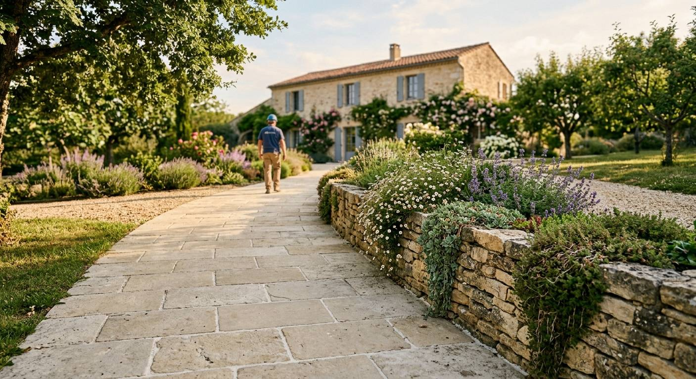
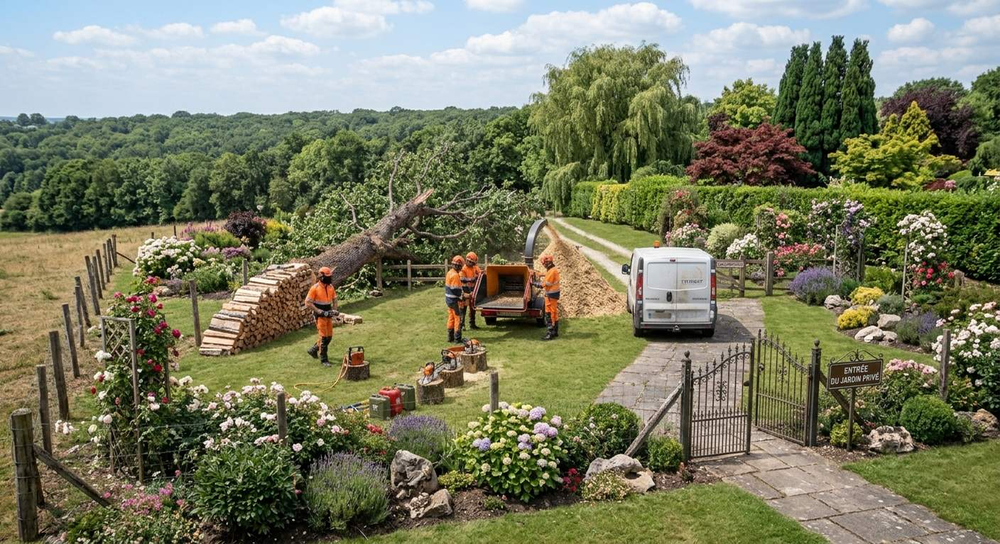
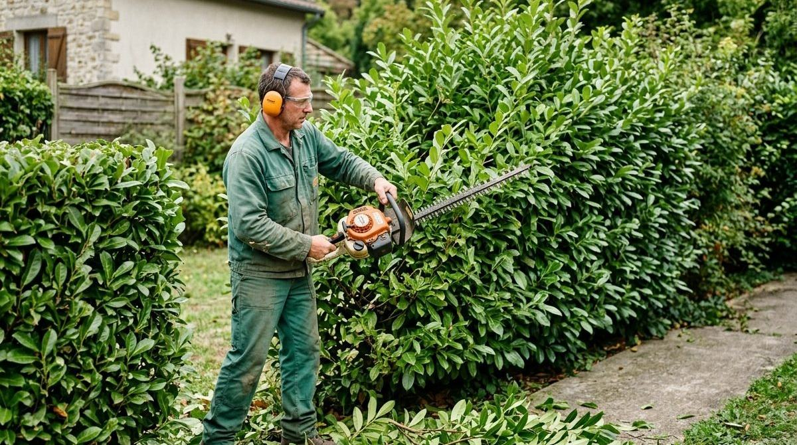

Engazonnement
Préparation du sol, puis semis ou pose de gazon.
Prestations
Création, plantations, engazonnement et entretien : l'aménagement paysager à Louveciennes et aux alentours.



Création de jardins
Massifs, pelouses, allées : l'aménagement se pense selon le terrain et l'usage que vous faites de votre extérieur.


Plantations
Arbustes, haies ou vivaces : la plantation donne sa structure au jardin.


Engazonnement et entretien
Préparation du sol, puis semis ou pose de gazon.

Un suivi régulier de la pelouse, des haies et des massifs, selon vos besoins.
Pierre Gonin vous répond par téléphone.
© Les 3 Jardins (L3J) · Maquette de démonstration